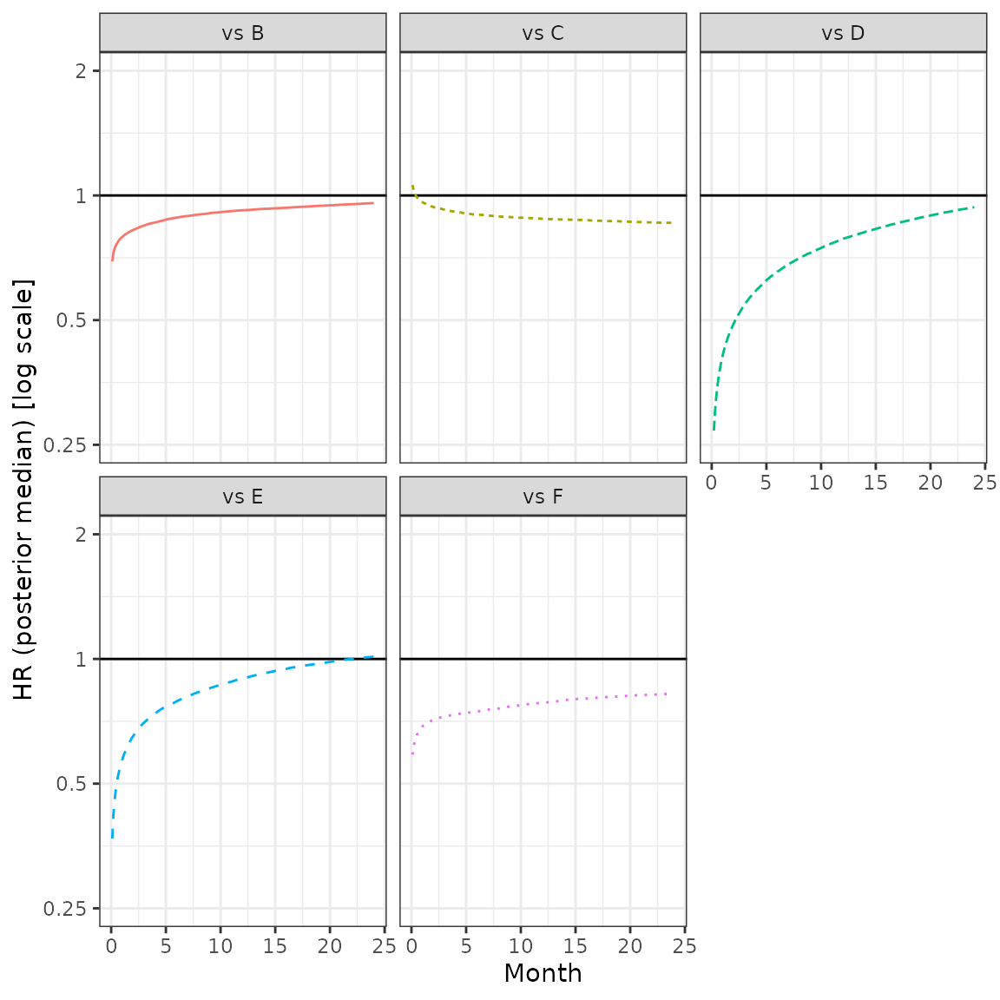
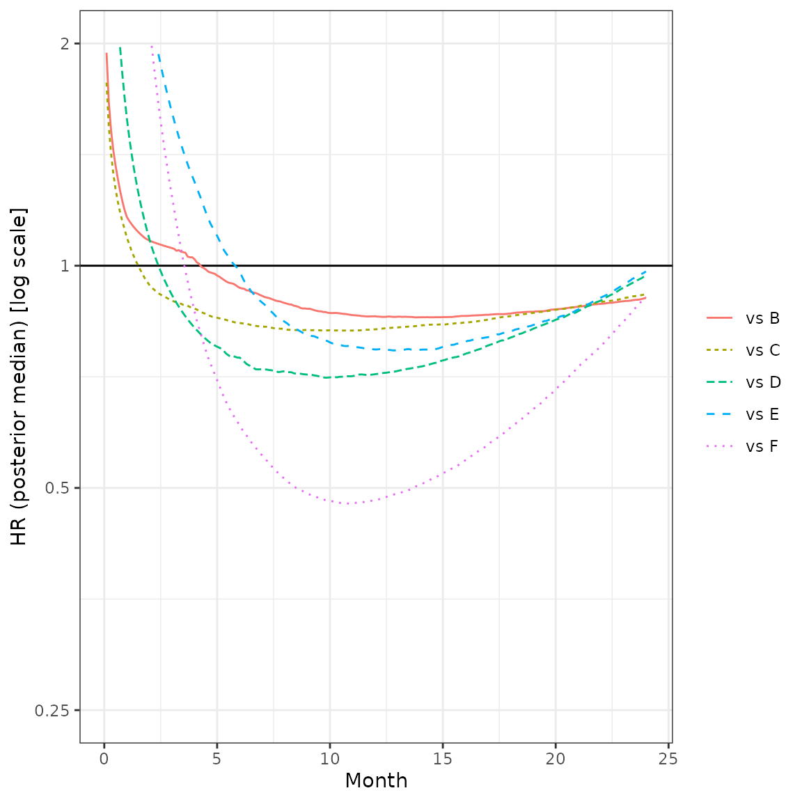

example-nma-groupedTTE-FP.Rmd“Minimal” example that might serve as template ## Introduction This vignette provides a short example of a Bayesian fixed effect fractional polynomial NMA model for grouped survival data.
data("grouped_TTE")
# Returns list list contaiing a jags list ready for input to `nma_fit` and a network object
model_input <- nma_pre_proc(grouped_TTE, model_plan)Figure Network graph
plot(model_input$network, displaylabels = TRUE)
model <- nma_fit(model_input = model_input)## module glm loaded## Compiling model graph
## Resolving undeclared variables
## Allocating nodes
## Graph information:
## Observed stochastic nodes: 675
## Unobserved stochastic nodes: 12
## Total graph size: 12532
##
## Initializing model
# Prepare plot data
nodes <- colnames(as.mcmc(model)[[1]])
sel <- grep("d[2,", nodes, fixed = TRUE)
plot_data <- ggs(as.mcmc(model)[, sel])Produce diagnostic plots to further assess convergence. Here: select the contrasts trt 2 vs trt 1 for visibility.
Figure Traceplot
ggs_traceplot(plot_data)Figure Densityplot
ggs_density(plot_data)Figure Auto-correlation plot
ggs_autocorrelation(plot_data)Figure Running means
ggs_running(plot_data)Save the FE results for later use.
res_fe1 <- model
rm(model)Create a new model plan and re-run the fit.
# Returns list list contaiing a jags list ready for input to `nma_fit` and a network object
model_input <- nma_pre_proc(grouped_TTE, model_plan)
model <- nma_fit(model_input = model_input)## Compiling model graph
## Resolving undeclared variables
## Allocating nodes
## Graph information:
## Observed stochastic nodes: 675
## Unobserved stochastic nodes: 12
## Total graph size: 18549
##
## Initializing modelJAGS summary. Check convergence by inspecting Rhat (should be at least <1.05), and see whether the effective sample size is large enough to allow for inference (rule of thumb: n.eff >1000, though this may be demanding).
Produce diagnostic plots to further assess convergence. Here: select the contrasts trt 2 vs trt 1 for visibility.
Start with an object collecting all fits.
all_res <- list(res_fe1, res_fe2)
dcompare <- get_fp_comparison(all_res)
cat("__Table__ Model comparison")Table Model comparison
pander::pandoc.table(dcompare, row.names = FALSE, split.tables = Inf)| Model | Order | Exponents | REINT | RE | DIC | pD | meanDev |
|---|---|---|---|---|---|---|---|
| FP | 1 | 0 | FALSE | FALSE | 2706.7 | 24.1 | 2681.9 |
| FP | 2 | 0, 1 | FALSE | FALSE | 2651.3 | 34.4 | 2646.5 |
# loop through fits
for(i in seq_along(all_res)){
res_i <- all_res[[i]]
title <- res_i$descr
cat("### ", title, " \n")
## Tables: Hazard ratio estimates for each segment
HR_rev <- get_fp_HR(x = seq(0.1, 24, 0.1),
fit = res_i,
trt.nos = 1:res_i$data.jg$Ntrt,
ref.no = 2, # use this treatment in the list of treatments as reference for the HRs
revert = TRUE # revert to get HRs ref vs other treatments
)
fig1 <- plot_fp_HR(HR_rev, xlab = "Month", breaks = c(0.25, 0.5, 1, 2))
fig2 <- plot_fp_HR(HR_rev, xlab = "Month", breaks = c(0.25, 0.5, 1, 2), facet = TRUE) # !! HERE: ADD CIs !!
dHRtab <- HR_rev %>%
mutate(Month = round(x, 1)) %>% # trick, otherwise equality testing fails to pick out all timepoints in filter step
filter(Month %in% seq(3, 24, 3)) %>%
mutate(Comparison = lab, Month, HR = round(median, 3), lCI = round(lCI, 3), uCI = round(uCI, 3)) %>%
select(Comparison, Month, HR, lCI, uCI)
cat("__Figure__ Hazard ratios treatment A vs other treatments\n")
plot(fig1)
cat("\n\n")
cat("__Figure__ Hazard ratios treatment A vs other treatments (multi-panel)\n")
plot(fig2)
cat("\n\n")
cat("__Table__ Hazard ratios treatment A vs other treatments\n")
pander::pandoc.table(dHRtab, row.names = FALSE, split.tables = Inf)
cat("\n\n")
cat("\n\n")
rm(HR_rev)
rm(dHRtab)
rm(fig1)
rm(fig2)
rm(res_i)
}Figure Hazard ratios treatment A vs other treatments
Figure Hazard ratios treatment A vs other treatments (multi-panel) 
Table Hazard ratios treatment A vs other treatments
| Comparison | Month | HR | lCI | uCI |
|---|---|---|---|---|
| A vs B | 3 | 0.846 | 0.684 | 1.044 |
| A vs B | 6 | 0.884 | 0.755 | 1.034 |
| A vs B | 9 | 0.906 | 0.781 | 1.042 |
| A vs B | 12 | 0.921 | 0.793 | 1.056 |
| A vs B | 15 | 0.931 | 0.801 | 1.076 |
| A vs B | 18 | 0.94 | 0.807 | 1.096 |
| A vs B | 21 | 0.95 | 0.808 | 1.113 |
| A vs B | 24 | 0.959 | 0.81 | 1.137 |
| A vs C | 3 | 0.924 | 0.686 | 1.235 |
| A vs C | 6 | 0.9 | 0.715 | 1.144 |
| A vs C | 9 | 0.887 | 0.708 | 1.108 |
| A vs C | 12 | 0.878 | 0.696 | 1.105 |
| A vs C | 15 | 0.873 | 0.681 | 1.111 |
| A vs C | 18 | 0.867 | 0.667 | 1.119 |
| A vs C | 21 | 0.862 | 0.653 | 1.129 |
| A vs C | 24 | 0.858 | 0.64 | 1.143 |
| A vs D | 3 | 0.545 | 0.389 | 0.833 |
| A vs D | 6 | 0.655 | 0.506 | 0.887 |
| A vs D | 9 | 0.726 | 0.571 | 0.942 |
| A vs D | 12 | 0.786 | 0.609 | 1.011 |
| A vs D | 15 | 0.83 | 0.633 | 1.088 |
| A vs D | 18 | 0.87 | 0.649 | 1.161 |
| A vs D | 21 | 0.906 | 0.659 | 1.233 |
| A vs D | 24 | 0.937 | 0.662 | 1.302 |
| A vs E | 3 | 0.702 | 0.466 | 1.14 |
| A vs E | 6 | 0.791 | 0.59 | 1.11 |
| A vs E | 9 | 0.85 | 0.65 | 1.15 |
| A vs E | 12 | 0.897 | 0.676 | 1.204 |
| A vs E | 15 | 0.935 | 0.686 | 1.264 |
| A vs E | 18 | 0.967 | 0.684 | 1.317 |
| A vs E | 21 | 0.992 | 0.68 | 1.384 |
| A vs E | 24 | 1.014 | 0.682 | 1.445 |
| A vs F | 3 | 0.726 | 0.389 | 1.307 |
| A vs F | 6 | 0.747 | 0.491 | 1.176 |
| A vs F | 9 | 0.767 | 0.537 | 1.142 |
| A vs F | 12 | 0.783 | 0.547 | 1.137 |
| A vs F | 15 | 0.8 | 0.552 | 1.152 |
| A vs F | 18 | 0.809 | 0.554 | 1.18 |
| A vs F | 21 | 0.818 | 0.548 | 1.216 |
| A vs F | 24 | 0.826 | 0.536 | 1.259 |
Figure Hazard ratios treatment A vs other treatments 
Figure Hazard ratios treatment A vs other treatments (multi-panel)
Table Hazard ratios treatment A vs other treatments
| Comparison | Month | HR | lCI | uCI |
|---|---|---|---|---|
| A vs B | 3 | 1.057 | 0.722 | 1.639 |
| A vs B | 6 | 0.933 | 0.729 | 1.127 |
| A vs B | 9 | 0.874 | 0.709 | 1.058 |
| A vs B | 12 | 0.854 | 0.683 | 1.047 |
| A vs B | 15 | 0.852 | 0.673 | 1.059 |
| A vs B | 18 | 0.861 | 0.692 | 1.068 |
| A vs B | 21 | 0.88 | 0.709 | 1.08 |
| A vs B | 24 | 0.904 | 0.736 | 1.114 |
| A vs C | 3 | 0.897 | 0.682 | 1.533 |
| A vs C | 6 | 0.836 | 0.654 | 1.121 |
| A vs C | 9 | 0.818 | 0.64 | 1.067 |
| A vs C | 12 | 0.82 | 0.635 | 1.066 |
| A vs C | 15 | 0.832 | 0.647 | 1.076 |
| A vs C | 18 | 0.854 | 0.669 | 1.097 |
| A vs C | 21 | 0.881 | 0.685 | 1.146 |
| A vs C | 24 | 0.915 | 0.686 | 1.229 |
| A vs D | 3 | 0.913 | 0.508 | 3.888 |
| A vs D | 6 | 0.751 | 0.493 | 2.275 |
| A vs D | 9 | 0.712 | 0.517 | 1.625 |
| A vs D | 12 | 0.713 | 0.566 | 1.245 |
| A vs D | 15 | 0.744 | 0.578 | 1.048 |
| A vs D | 18 | 0.799 | 0.554 | 1.143 |
| A vs D | 21 | 0.868 | 0.521 | 1.334 |
| A vs D | 24 | 0.969 | 0.491 | 1.582 |
| A vs E | 3 | 1.612 | 0.852 | 12.29 |
| A vs E | 6 | 0.982 | 0.616 | 3.973 |
| A vs E | 9 | 0.805 | 0.55 | 2.077 |
| A vs E | 12 | 0.77 | 0.559 | 1.363 |
| A vs E | 15 | 0.776 | 0.563 | 1.088 |
| A vs E | 18 | 0.815 | 0.534 | 1.144 |
| A vs E | 21 | 0.872 | 0.507 | 1.333 |
| A vs E | 24 | 0.982 | 0.472 | 1.598 |
| A vs F | 3 | 1.241 | 0.669 | 2.116 |
| A vs F | 6 | 0.607 | 0.408 | 1.016 |
| A vs F | 9 | 0.491 | 0.334 | 0.802 |
| A vs F | 12 | 0.482 | 0.323 | 0.758 |
| A vs F | 15 | 0.524 | 0.354 | 0.794 |
| A vs F | 18 | 0.603 | 0.405 | 0.914 |
| A vs F | 21 | 0.729 | 0.492 | 1.118 |
| A vs F | 24 | 0.907 | 0.59 | 1.509 |
The NMA baseline estimate from the ref_trt arm from ref_std is used. These are combined with the time-varying hazard-ratio functions from the NMA to obtain the survivor functions for the other interventions.
ref_trt <- "B"
ref_std <- "STUDY2"
hor <- 60
# loop through fits
for(i in seq_along(all_res)){
res_i <- all_res[[i]]
title <- res_i$descr
cat("### ", title, " \n")
## Plots of survivor functions over time ("NMA result"), ref study/arm and timehorizons specified in settings function
sel_ref <- which(attr(res_i$data.jg, "d_arms")$study == ref_std & attr(res_i$data.jg, "d_arms")$treatment == ref_trt)
id_ref_std <- attr(res_i$data.jg, "d_arms")$studyn[sel_ref]
id_ref_arm <- attr(res_i$data.jg, "d_arms")$arm[sel_ref]
S_extrap <- get_fp_S(fit = res_i,
ref.std = id_ref_std,
ref.arm = id_ref_arm,
time = seq(0.1, hor, 0.1))
fig <- ggplot(data = S_extrap) +
geom_line(aes(x = time, y = S, col = treatment, linetype = treatment)) +
ylim(0, 1) +
xlab("Month") + ylab("Survival probability") +
theme_bw() +
theme(legend.title = element_blank())
cat("__Figure__ Survivor function estimates (time horizon:", hor, "months) \n")
plot(fig)
cat("\n\n")
fig <- ggplot(data = S_extrap) +
facet_wrap(~treatment) +
geom_ribbon(aes(x = time, ymin = lCrI, ymax = uCrI), fill = "lightblue", alpha = 0.8) +
geom_line(aes(x = time, y = S)) +
ylim(0, 1) +
xlab("Month") + ylab("Survival probability") +
theme_bw()
cat("__Figure__ Survivor function estimates by treatment (time horizon:", hor, "months) \n")
plot(fig)
cat("\n\n")
rm(list = c("S_extrap", "fig"))
rm(res_i)
}For every arm in every study, the study baseline hazard estimate is combined with the corresponding contrast estimate (both from the NMA) to obtain the estimated survivor functions.
hor <- 36
# loop through fits
for(i in seq_along(all_res)){
res_i <- all_res[[i]]
title <- res_i$descr
cat("### ", title, " \n")
gof <- get_fp_GoF(fit = res_i, time = seq(0.1, hor, 0.1))
fig <- ggplot() +
geom_line(data = gof %>% filter(type == "nma"), aes(x = time, y = S, col = treatment)) +
geom_line(data = gof %>% filter(type == "obs"), aes(x = time, y = S, col = treatment), linetype = "dashed") +
facet_wrap(~study, ncol = 2) +
ylim(0, 1) + xlim(0, 36) +
xlab("Month") + ylab("Survival probability") +
theme_bw() +
theme(legend.position = "top", legend.title = element_blank())
cat("__Figure__ Goodness-of-fit: estimated (solid lines) and observed (dashed) survivor functions for each study\n")
plot(fig)
cat("\n\n")
rm(list = c("gof", "fig"))
rm(res_i)
}
# loop through fits
for(i in seq_along(all_res)){
res_i <- all_res[[i]]
title <- res_i$descr
cat("### ", title, " \n")
cest <- get_fp_contrasts(res_i)
cat("\n\n")
cat("__Table__ Contrast estimates in fractional polynomial vs network reference\n")
pander::pandoc.table(cest, row.names = FALSE, split.tables = Inf)
cat("\n\n")
rm(cest)
rm(res_i)
}Table Contrast estimates in fractional polynomial vs network reference
| Treatment | Int.med | Int.lCI | Int.uCI | Slope1.med | Slope1.lCI | Slope1.uCI |
|---|---|---|---|---|---|---|
| A | -0.231 | -0.56 | 0.088 | 0.058 | -0.062 | 0.181 |
| C | -0.201 | -0.674 | 0.238 | 0.101 | -0.091 | 0.289 |
| D | 0.676 | 0.066 | 1.069 | -0.208 | -0.379 | 0.071 |
| E | 0.346 | -0.442 | 0.884 | -0.127 | -0.346 | 0.211 |
| F | 0.16 | -0.761 | 1.113 | -0.009 | -0.373 | 0.343 |
Table Contrast estimates in fractional polynomial vs network reference
| Treatment | Int.med | Int.lCI | Int.uCI | Slope1.med | Slope1.lCI | Slope1.uCI | Slope2.med | Slope2.lCI | Slope2.uCI |
|---|---|---|---|---|---|---|---|---|---|
| A | 0.143 | -0.382 | 1.235 | -0.232 | -0.881 | 0.151 | 0.018 | -0.01 | 0.063 |
| C | 0.208 | -0.373 | 0.685 | -0.112 | -0.335 | 0.327 | -0.001 | -0.033 | 0.03 |
| D | -0.253 | -1.072 | 0.33 | 0.345 | -0.12 | 0.716 | -0.05 | -0.072 | 0.064 |
| E | -1.229 | -3.053 | -0.515 | 0.961 | 0.667 | 1.11 | -0.072 | -0.102 | 0.019 |
| F | -1.154 | -2.174 | -0.47 | 1.303 | 0.67 | 2.093 | -0.128 | -0.189 | -0.058 |
# loop through fits
for(i in seq_along(all_res)){
res_i <- all_res[[i]]
title <- res_i$descr
cat("### ", title, " \n")
corrs <- get_fp_corrs(res_i)
for(j in 1:res_i$data.jg$Ntrt){
cat("\n\n")
cat("__Table__ Posterior correlations of (multivariate) contrasts for", dimnames(corrs)$treatment[j],"vs reference\n")
pander::pandoc.table(corrs[j,,], row.names = dimnames(corrs[j,,])[[1]], split.tables = Inf)
cat("\n\n")
}
rm(corrs)
rm(res_i)
}Table Posterior correlations of (multivariate) contrasts for B vs reference
| Int | Slope1 | |
|---|---|---|
| Int | 1 | NA |
| Slope1 | NA | 1 |
Table Posterior correlations of (multivariate) contrasts for A vs reference
| Int | Slope1 | |
|---|---|---|
| Int | 1 | -0.901 |
| Slope1 | -0.901 | 1 |
Table Posterior correlations of (multivariate) contrasts for C vs reference
| Int | Slope1 | |
|---|---|---|
| Int | 1 | -0.877 |
| Slope1 | -0.877 | 1 |
Table Posterior correlations of (multivariate) contrasts for D vs reference
| Int | Slope1 | |
|---|---|---|
| Int | 1 | -0.919 |
| Slope1 | -0.919 | 1 |
Table Posterior correlations of (multivariate) contrasts for E vs reference
| Int | Slope1 | |
|---|---|---|
| Int | 1 | -0.925 |
| Slope1 | -0.925 | 1 |
Table Posterior correlations of (multivariate) contrasts for F vs reference
| Int | Slope1 | |
|---|---|---|
| Int | 1 | -0.927 |
| Slope1 | -0.927 | 1 |
Table Posterior correlations of (multivariate) contrasts for B vs reference
| Int | Slope1 | Slope2 | |
|---|---|---|---|
| Int | 1 | NA | NA |
| Slope1 | NA | 1 | NA |
| Slope2 | NA | NA | 1 |
Table Posterior correlations of (multivariate) contrasts for A vs reference
| Int | Slope1 | Slope2 | |
|---|---|---|---|
| Int | 1 | -0.97 | 0.863 |
| Slope1 | -0.97 | 1 | -0.955 |
| Slope2 | 0.863 | -0.955 | 1 |
Table Posterior correlations of (multivariate) contrasts for C vs reference
| Int | Slope1 | Slope2 | |
|---|---|---|---|
| Int | 1 | -0.843 | 0.425 |
| Slope1 | -0.843 | 1 | -0.805 |
| Slope2 | 0.425 | -0.805 | 1 |
Table Posterior correlations of (multivariate) contrasts for D vs reference
| Int | Slope1 | Slope2 | |
|---|---|---|---|
| Int | 1 | -0.333 | -0.537 |
| Slope1 | -0.333 | 1 | -0.596 |
| Slope2 | -0.537 | -0.596 | 1 |
Table Posterior correlations of (multivariate) contrasts for E vs reference
| Int | Slope1 | Slope2 | |
|---|---|---|---|
| Int | 1 | -0.604 | -0.84 |
| Slope1 | -0.604 | 1 | 0.12 |
| Slope2 | -0.84 | 0.12 | 1 |
Table Posterior correlations of (multivariate) contrasts for F vs reference
| Int | Slope1 | Slope2 | |
|---|---|---|---|
| Int | 1 | -0.85 | 0.553 |
| Slope1 | -0.85 | 1 | -0.885 |
| Slope2 | 0.553 | -0.885 | 1 |
# loop through fits
for(i in seq_along(all_res)){
res_i <- all_res[[i]]
title <- res_i$descr
cat("## ", title, " \n\n")
jginfo <- get_jags_info(res_i, include.comments = TRUE)
cat("```\n", jginfo, "\n```\n\n")
rm(jginfo)
rm(out)
} ##############################################
# DATA #
##############################################
list(
Na = c(2, 2, 2, 2, 2, 2, 2) ,
Nobs = 675 ,
Ns = 7 ,
Ntrt = 6 ,
P1 = 0 ,
a = c(2, 2, 2, 2, 2, 2, 2, 2, 2, 2, 2, 2, 2, 2, 2, 2, 2, 2, 2, 2, 2, 2, 2, 2, 2, 2, 2, 2, 2, 2, 2, 2, 2, 2, 2, 2, 2, 2, 2, 2, 2, 2, 2, 2, 2, 2, 2, 2, 2, 2, 2, 2, 2, 1, 1, 1, 1, 1, 1, 1, 1, 1, 1, 1, 1, 1, 1, 1, 1, 1, 1, 1, 1, 1, 1, 1, 1, 1, 1, 1, 1, 1, 1, 1, 1, 1, 1, 1, 1, 1, 1, 1, 1, 1, 1, 1, 1, 1, 1, 1, 1, 1, 1, 1, 1, 1, 1, 1, 1, 1, 1, 1, 1, 1, 1, 1, 1, 1, 1, 1, 1, 1, 1, 1, 1, 1, 1, 1, 1, 1, 1, 1, 1, 1, 1, 1, 1, 1, 1, 1, 1, 1, 1, 1, 1, 1, 1, 1, 2, 2, 2, 2, 2, 2, 2, 2, 2, 2, 2, 2, 2, 2, 2, 2, 2, 2, 2,
2, 2, 2, 2, 2, 2, 2, 2, 2, 2, 2, 2, 2, 2, 2, 2, 2, 2, 2, 2, 2, 2, 2, 1, 1, 1, 1, 1, 1, 1, 1, 1, 1, 1, 1, 1, 1, 1, 1, 1, 1, 1, 1, 1, 1, 1, 1, 1, 1, 1, 1, 1, 1, 1, 1, 1, 1, 1, 1, 2, 2, 2, 2, 2, 2, 2, 2, 2, 2, 2, 2, 2, 2, 2, 2, 2, 2, 2, 2, 2, 2, 2, 2, 2, 2, 2, 2, 2, 2, 2, 2, 2, 2, 2, 2, 2, 2, 2, 2, 2, 2, 2, 2, 2, 2, 2, 2, 2, 2, 2, 2, 2, 2, 2, 2, 2, 2, 2, 2, 2, 2, 2, 2, 2, 2, 2, 2, 2, 2, 2, 2, 2, 2, 2, 2, 1, 1, 1, 1, 1, 1, 1, 1, 1, 1, 1, 1, 1, 1, 1, 1, 1, 1, 1, 1, 1, 1, 1, 1, 1, 1, 1, 1, 1, 1, 1, 1,
1, 1, 1, 1, 1, 1, 1, 1, 1, 1, 1, 1, 1, 1, 1, 1, 1, 1, 1, 1, 1, 1, 1, 1, 1, 1, 1, 1, 1, 1, 1, 1, 1, 1, 1, 1, 1, 1, 1, 1, 1, 1, 1, 1, 1, 1, 1, 1, 1, 1, 1, 1, 1, 1, 1, 1, 1, 1, 1, 1, 1, 1, 1, 1, 1, 2, 2, 2, 2, 2, 2, 2, 2, 2, 2, 2, 2, 2, 2, 2, 2, 2, 2, 2, 2, 2, 2, 2, 2, 2, 2, 2, 2, 2, 2, 2, 2, 2, 2, 2, 2, 2, 2, 2, 2, 2, 2, 2, 2, 2, 2, 2, 2, 2, 2, 2, 2, 2, 2, 2, 2, 2, 2, 2, 2, 2, 2, 2, 2, 2, 2, 2, 2, 2, 2, 2, 2, 2, 2, 2, 2, 2, 2, 2, 2, 2, 2, 2, 2, 2, 2, 2, 2, 2, 2, 2, 2, 2, 2, 2, 2, 2, 2, 2, 2, 2, 2,
2, 2, 2, 2, 1, 1, 1, 1, 1, 1, 1, 1, 1, 1, 1, 1, 1, 1, 1, 1, 1, 1, 1, 1, 1, 1, 1, 1, 1, 1, 1, 1, 1, 1, 1, 1, 1, 1, 1, 1, 1, 1, 1, 1, 1, 1, 1, 1, 1, 1, 1, 1, 1, 1, 1, 1, 1, 1, 1, 1, 1, 1, 1, 1, 1, 1, 1, 1, 1, 1, 1, 1, 1, 1, 1, 1, 1, 1, 1, 1, 1, 1, 1, 1, 1, 1, 1, 1, 1, 1, 1, 1, 1, 1, 1, 1, 1, 1, 1, 1, 1, 1, 1, 1, 1, 1, 1, 1, 1, 1, 1, 2, 2, 2, 2, 2, 2, 2, 2, 2, 2, 2, 2, 2, 2, 2, 2, 2, 2, 2, 2, 2, 2, 2, 2, 2, 2, 2, 2, 2, 2, 2, 2, 2, 2, 2, 2, 2, 2, 2, 2, 2, 2, 2, 2, 2, 2, 2, 2, 2, 2, 2, 2, 2, 2, 2, 2,
2, 2, 2, 2, 2, 2, 2) ,
dt = c(1, 1, 1, 1, 1, 1, 1, 1, 1, 1, 1, 1, 1, 1, 1, 1, 1, 1, 1, 1, 1, 1, 1, 1, 1, 1, 1, 1, 1, 1, 1, 1, 1, 1, 1, 1, 1, 1, 1, 1, 1, 1, 1, 1, 1, 1, 1, 1, 1, 1, 1, 1, 1, 1, 1, 1, 1, 1, 1, 1, 1, 1, 1, 1, 1, 1, 1, 1, 1, 1, 1, 1, 1, 1, 1, 1, 1, 1, 1, 1, 1, 1, 1, 1, 1, 1, 1, 1, 1, 1, 1, 1, 1, 1, 1, 1, 1, 1, 1, 1, 1, 1, 1, 1, 1, 1, 1, 1, 1, 1, 1, 1, 1, 1, 1, 1, 1, 1, 1, 1, 1, 1, 1, 1, 1, 1, 1, 1, 1, 1, 1, 1, 1, 1, 1, 1, 1, 1, 1, 1, 1, 1, 1, 1, 1, 1, 1, 1, 1, 1, 1, 1, 1, 1, 1, 1, 1, 1, 1, 1, 1, 1, 1, 1, 1, 1, 1,
1, 1, 1, 1, 1, 1, 1, 1, 1, 1, 1, 1, 1, 1, 1, 1, 1, 1, 1, 1, 1, 1, 1, 1, 1, 1, 1, 1, 1, 1, 1, 1, 1, 1, 1, 1, 1, 1, 1, 1, 1, 1, 1, 1, 1, 1, 1, 1, 1, 1, 1, 1, 1, 1, 1, 1, 1, 1, 1, 1, 1, 1, 1, 1, 1, 1, 1, 1, 1, 1, 1, 1, 1, 1, 1, 1, 1, 1, 1, 1, 1, 1, 1, 1, 1, 1, 1, 1, 1, 1, 1, 1, 1, 1, 1, 1, 1, 1, 1, 1, 1, 1, 1, 1, 1, 1, 1, 1, 1, 1, 1, 1, 1, 1, 1, 1, 1, 1, 1, 1, 1, 1, 1, 1, 1, 1, 1, 1, 1, 1, 1, 1, 1, 1, 1, 1, 1, 1, 1, 1, 1, 1, 1, 1, 1, 1, 1, 1, 1, 1, 1, 1, 1, 1, 1, 1, 1, 1, 1, 1, 1, 1, 1, 1, 1, 1, 1,
1, 1, 1, 1, 1, 1, 1, 1, 1, 1, 1, 1, 1, 1, 1, 1, 1, 1, 1, 1, 1, 1, 1, 1, 1, 1, 1, 1, 1, 1, 1, 1, 1, 1, 1, 1, 1, 1, 1, 1, 1, 1, 1, 1, 1, 1, 1, 1, 1, 1, 1, 1, 1, 1, 1, 1, 1, 1, 1, 1, 1, 1, 1, 1, 1, 1, 1, 1, 1, 1, 1, 1, 1, 1, 1, 1, 1, 1, 1, 1, 1, 1, 1, 1, 1, 1, 1, 1, 1, 1, 1, 1, 1, 1, 1, 1, 1, 1, 1, 1, 1, 1, 1, 1, 1, 1, 1, 1, 1, 1, 1, 1, 1, 1, 1, 1, 1, 1, 1, 1, 1, 1, 1, 1, 1, 1, 1, 1, 1, 1, 1, 1, 1, 1, 1, 1, 1, 1, 1, 1, 1, 1, 1, 1, 1, 1, 1, 1, 1, 1, 1, 1, 1, 1, 1, 1, 1, 1, 1, 1, 1, 1, 1, 1, 1, 1, 1,
1, 1, 1, 1, 1, 1, 1, 1, 1, 1, 1, 1, 1, 1, 1, 1, 1, 1, 1, 1, 1, 1, 1, 1, 1, 1, 1, 1, 1, 1, 1, 1, 1, 1, 1, 1, 1, 1, 1, 1, 1, 1, 1, 1, 1, 1, 1, 1, 1, 1, 1, 1, 1, 1, 1, 1, 1, 1, 1, 1, 1, 1, 1, 1, 1, 1, 1, 1, 1, 1, 1, 1, 1, 1, 1, 1, 1, 1, 1, 1, 1, 1, 1, 1, 1, 1, 1, 1, 1, 1, 1, 1, 1, 1, 1, 1, 1, 1, 1, 1, 1, 1, 1, 1, 1, 1, 1, 1, 1, 1, 1, 1, 1, 1, 1, 1, 1, 1, 1, 1, 1, 1, 1, 1, 1, 1, 1, 1, 1, 1, 1, 1, 1, 1, 1, 1, 1, 1, 1, 1, 1, 1, 1, 1, 1, 1, 1, 1, 1, 1, 1, 1, 1, 1, 1, 1, 1, 1, 1, 1, 1, 1, 1, 1, 1, 1, 1,
1, 1, 1, 1, 1, 1, 1) ,
feprior_mean = c(0, 0) ,
feprior_prec = structure(.Data = c(1e-04, 0, 0, 1e-04) ,.Dim = c(2, 2) ) ,
n = c(182, 177, 172, 164, 155, 148, 143, 138, 132, 128, 125, 120, 117, 110, 108, 106, 101, 98, 96, 90, 87, 83, 79, 75, 70, 66, 59, 56, 53, 50, 47, 45, 39, 37, 34, 32, 31, 26, 25, 24, 23, 21, 19, 16, 14, 13, 11, 10, 8, 6, 5, 3, 1, 183, 179, 172, 159, 152, 147, 139, 133, 131, 124, 119, 115, 110, 104, 101, 95, 93, 92, 88, 83, 80, 76, 73, 68, 62, 59, 53, 50, 43, 40, 37, 35, 33, 31, 30, 29, 26, 24, 22, 19, 18, 18, 18, 18, 17, 17, 15, 14, 12, 10, 8, 4, 2, 322, 319, 309, 301, 288, 277, 262, 255, 248, 238, 229,
226, 216, 206, 200, 195, 189, 183, 176, 171, 163, 160, 150, 148, 142, 136, 130, 127, 121, 116, 113, 112, 108, 105, 101, 101, 96, 95, 91, 89, 86, 84, 327, 324, 318, 307, 297, 283, 275, 263, 256, 248, 241, 235, 225, 217, 212, 201, 194, 184, 178, 169, 161, 156, 149, 142, 134, 131, 125, 117, 115, 107, 101, 96, 93, 89, 83, 79, 76, 74, 70, 68, 65, 63, 375, 374, 368, 360, 352, 339, 326, 319, 315, 308, 295, 289, 283, 271, 262, 259, 247, 238, 229, 225, 213, 203, 197, 190, 180, 161, 135, 121, 98, 78, 61, 55,
52, 45, 39, 35, 375, 372, 356, 338, 319, 308, 295, 282, 276, 269, 260, 251, 242, 228, 221, 210, 203, 200, 187, 180, 172, 168, 161, 155, 149, 132, 115, 104, 82, 66, 53, 48, 43, 39, 34, 30, 181, 181, 180, 176, 172, 169, 167, 158, 153, 145, 143, 141, 137, 133, 129, 126, 123, 121, 118, 113, 112, 108, 105, 101, 99, 99, 98, 95, 92, 90, 88, 87, 86, 83, 82, 82, 78, 78, 78, 78, 181, 179, 176, 175, 173, 172, 169, 166, 165, 164, 159, 155, 150, 144, 140, 135, 132, 132, 132, 129, 127, 126, 123, 121, 116, 109,
107, 105, 105, 104, 101, 97, 94, 93, 93, 90, 557, 552, 541, 532, 521, 505, 487, 473, 462, 452, 436, 423, 409, 388, 377, 368, 357, 348, 338, 328, 320, 312, 305, 295, 280, 273, 262, 255, 243, 235, 230, 226, 219, 215, 208, 204, 197, 184, 171, 156, 147, 147, 114, 114, 99, 99, 80, 77, 57, 48, 38, 27, 21, 20, 17, 14, 8, 6, 6, 1, 1, 553, 544, 530, 518, 501, 480, 468, 448, 435, 420, 406, 387, 377, 366, 354, 348, 339, 329, 321, 315, 304, 295, 283, 280, 272, 263, 254, 247, 237, 230, 224, 218, 212, 203, 192,
187, 180, 174, 162, 149, 138, 131, 120, 111, 100, 92, 80, 63, 56, 48, 38, 31, 20, 17, 14, 11, 9, 7, 5, 5, 1, 189, 184, 178, 166, 156, 144, 138, 131, 123, 117, 111, 106, 103, 98, 93, 88, 85, 79, 74, 68, 64, 59, 55, 50, 46, 43, 40, 37, 35, 31, 28, 26, 25, 20, 19, 15, 15, 12, 10, 9, 9, 3, 3, 3, 3, 188, 179, 175, 167, 159, 151, 141, 136, 131, 127, 123, 117, 112, 106, 101, 96, 94, 88, 84, 77, 70, 64, 57, 52, 44, 39, 39, 30, 30, 26, 23, 21, 20, 16, 16, 12, 11, 11, 10, 8, 7, 4, 4, 2, 2, 2, 363, 360, 344,
332, 314, 305, 286, 269, 261, 248, 236, 226, 220, 214, 199, 197, 188, 180, 177, 168, 162, 155, 151, 150, 148, 144, 140, 136, 128, 122, 118, 116, 113, 113, 109, 105, 98, 94, 87, 83, 75, 69, 64, 57, 53, 49, 46, 40, 37, 31, 25, 22, 18, 14, 10, 9, 7, 6, 3, 2, 1, 369, 366, 358, 347, 333, 322, 314, 302, 294, 277, 267, 254, 240, 236, 225, 218, 210, 197, 190, 179, 179, 173, 166, 163, 160, 154, 152, 148, 145, 143, 139, 136, 127, 123, 119, 118, 116, 112, 109, 106, 102, 99, 94, 85, 74, 66, 58, 50, 42, 35, 31,
28, 25, 20, 17, 15, 13, 11, 6, 3, 2, 1, 1) ,
r = c(2, 2, 4, 6, 4, 5, 4, 4, 4, 2, 5, 1, 7, 1, 1, 3, 1, 0, 3, 2, 1, 3, 2, 2, 2, 3, 1, 0, 0, 0, 1, 4, 1, 1, 1, 0, 4, 0, 0, 0, 0, 1, 0, 0, 0, 0, 0, 1, 0, 0, 0, 0, 0, 1, 4, 10, 4, 2, 6, 4, 0, 5, 3, 3, 3, 5, 1, 5, 1, 0, 3, 3, 3, 0, 0, 2, 2, 0, 3, 1, 3, 0, 1, 2, 0, 0, 0, 0, 2, 0, 0, 1, 0, 0, 0, 0, 1, 0, 0, 0, 0, 0, 0, 2, 0, 0, 3, 10, 7, 13, 10, 15, 7, 7, 9, 9, 3, 9, 10, 5, 5, 6, 5, 7, 5, 7, 3, 10, 1, 6, 6, 5, 3, 5, 5, 3, 0, 4, 3, 3, 0, 4, 1, 4, 1, 3, 2, 3, 2, 4, 9, 8, 12, 7, 11, 5, 7, 5, 4, 8, 7, 2, 10,
6, 8, 4, 8, 6, 3, 5, 5, 6, 2, 5, 5, 1, 6, 5, 3, 1, 2, 5, 2, 1, 1, 2, 1, 1, 0, 0, 0, 5, 6, 7, 11, 12, 7, 3, 6, 12, 5, 6, 11, 8, 1, 11, 8, 8, 3, 10, 9, 4, 5, 9, 2, 6, 3, 2, 1, 2, 1, 0, 3, 0, 0, 0, 0, 13, 14, 15, 7, 10, 12, 5, 6, 7, 8, 8, 14, 7, 10, 7, 3, 13, 5, 5, 2, 4, 4, 3, 3, 1, 2, 5, 1, 1, 0, 2, 0, 0, 0, 0, 0, 1, 4, 4, 3, 2, 9, 5, 8, 2, 2, 4, 4, 4, 3, 3, 2, 3, 5, 1, 4, 3, 4, 2, 0, 1, 3, 3, 2, 2, 1, 1, 3, 1, 0, 4, 0, 0, 0, 0, 2, 3, 1, 2, 1, 3, 3, 1, 1, 5, 4, 5, 6, 4, 5, 3, 0, 0, 3, 2, 1, 3, 2, 5,
7, 2, 2, 0, 1, 3, 4, 3, 1, 0, 3, 2, 3, 8, 6, 9, 14, 15, 10, 9, 8, 13, 11, 12, 21, 9, 8, 11, 9, 10, 9, 8, 6, 4, 6, 12, 4, 8, 4, 10, 6, 3, 1, 4, 2, 3, 2, 5, 5, 4, 6, 1, 0, 0, 0, 15, 0, 0, 3, 4, 1, 0, 0, 1, 0, 2, 0, 4, 0, 0, 0, 0, 0, 4, 8, 6, 12, 19, 9, 17, 11, 15, 12, 18, 10, 11, 11, 5, 9, 9, 6, 4, 10, 7, 9, 0, 5, 6, 6, 5, 7, 5, 5, 4, 3, 8, 9, 2, 6, 0, 5, 7, 3, 0, 3, 3, 6, 0, 3, 5, 1, 0, 0, 0, 2, 1, 2, 0, 0, 0, 0, 0, 0, 0, 2, 2, 10, 7, 8, 3, 6, 4, 5, 4, 4, 0, 3, 3, 1, 1, 4, 3, 2, 2, 2, 2, 1, 1, 2,
2, 0, 1, 3, 2, 0, 1, 0, 1, 0, 0, 1, 1, 1, 0, 0, 0, 0, 0, 0, 6, 2, 5, 5, 3, 8, 2, 4, 1, 2, 4, 3, 4, 4, 0, 2, 0, 3, 4, 1, 1, 0, 2, 3, 3, 0, 0, 0, 2, 0, 1, 1, 0, 0, 2, 1, 0, 0, 1, 1, 0, 0, 1, 0, 0, 0, 3, 15, 11, 18, 8, 19, 17, 8, 13, 11, 10, 6, 6, 15, 2, 8, 8, 3, 9, 6, 7, 4, 1, 2, 4, 4, 3, 8, 6, 4, 2, 3, 0, 4, 4, 7, 2, 4, 2, 4, 4, 3, 4, 1, 0, 0, 3, 0, 3, 2, 1, 1, 0, 1, 0, 0, 0, 0, 0, 0, 0, 3, 7, 11, 14, 10, 8, 12, 8, 17, 10, 13, 14, 4, 11, 7, 8, 13, 7, 11, 0, 6, 7, 3, 3, 6, 2, 3, 3, 2, 4, 3, 9, 4, 3,
1, 2, 3, 1, 2, 2, 2, 4, 3, 5, 1, 2, 2, 2, 4, 0, 0, 0, 1, 0, 1, 1, 0, 3, 2, 0, 0, 0, 0) ,
s = c(1, 1, 1, 1, 1, 1, 1, 1, 1, 1, 1, 1, 1, 1, 1, 1, 1, 1, 1, 1, 1, 1, 1, 1, 1, 1, 1, 1, 1, 1, 1, 1, 1, 1, 1, 1, 1, 1, 1, 1, 1, 1, 1, 1, 1, 1, 1, 1, 1, 1, 1, 1, 1, 1, 1, 1, 1, 1, 1, 1, 1, 1, 1, 1, 1, 1, 1, 1, 1, 1, 1, 1, 1, 1, 1, 1, 1, 1, 1, 1, 1, 1, 1, 1, 1, 1, 1, 1, 1, 1, 1, 1, 1, 1, 1, 1, 1, 1, 1, 1, 1, 1, 1, 1, 1, 1, 3, 3, 3, 3, 3, 3, 3, 3, 3, 3, 3, 3, 3, 3, 3, 3, 3, 3, 3, 3, 3, 3, 3, 3, 3, 3, 3, 3, 3, 3, 3, 3, 3, 3, 3, 3, 3, 3, 3, 3, 3, 3, 3, 3, 3, 3, 3, 3, 3, 3, 3, 3, 3, 3, 3, 3, 3, 3, 3, 3, 3,
3, 3, 3, 3, 3, 3, 3, 3, 3, 3, 3, 3, 3, 3, 3, 3, 3, 3, 3, 3, 3, 3, 3, 4, 4, 4, 4, 4, 4, 4, 4, 4, 4, 4, 4, 4, 4, 4, 4, 4, 4, 4, 4, 4, 4, 4, 4, 4, 4, 4, 4, 4, 4, 4, 4, 4, 4, 4, 4, 4, 4, 4, 4, 4, 4, 4, 4, 4, 4, 4, 4, 4, 4, 4, 4, 4, 4, 4, 4, 4, 4, 4, 4, 4, 4, 4, 4, 4, 4, 4, 4, 4, 4, 4, 4, 5, 5, 5, 5, 5, 5, 5, 5, 5, 5, 5, 5, 5, 5, 5, 5, 5, 5, 5, 5, 5, 5, 5, 5, 5, 5, 5, 5, 5, 5, 5, 5, 5, 5, 5, 5, 5, 5, 5, 5, 5, 5, 5, 5, 5, 5, 5, 5, 5, 5, 5, 5, 5, 5, 5, 5, 5, 5, 5, 5, 5, 5, 5, 5, 5, 5, 5, 5, 5, 5, 5, 5,
5, 5, 5, 5, 6, 6, 6, 6, 6, 6, 6, 6, 6, 6, 6, 6, 6, 6, 6, 6, 6, 6, 6, 6, 6, 6, 6, 6, 6, 6, 6, 6, 6, 6, 6, 6, 6, 6, 6, 6, 6, 6, 6, 6, 6, 6, 6, 6, 6, 6, 6, 6, 6, 6, 6, 6, 6, 6, 6, 6, 6, 6, 6, 6, 6, 6, 6, 6, 6, 6, 6, 6, 6, 6, 6, 6, 6, 6, 6, 6, 6, 6, 6, 6, 6, 6, 6, 6, 6, 6, 6, 6, 6, 6, 6, 6, 6, 6, 6, 6, 6, 6, 6, 6, 6, 6, 6, 6, 6, 6, 6, 6, 6, 6, 6, 6, 6, 6, 6, 6, 6, 6, 6, 6, 6, 6, 7, 7, 7, 7, 7, 7, 7, 7, 7, 7, 7, 7, 7, 7, 7, 7, 7, 7, 7, 7, 7, 7, 7, 7, 7, 7, 7, 7, 7, 7, 7, 7, 7, 7, 7, 7, 7, 7, 7, 7, 7,
7, 7, 7, 7, 7, 7, 7, 7, 7, 7, 7, 7, 7, 7, 7, 7, 7, 7, 7, 7, 7, 7, 7, 7, 7, 7, 7, 7, 7, 7, 7, 7, 7, 7, 7, 7, 7, 7, 7, 7, 7, 7, 7, 7, 7, 7, 7, 7, 7, 7, 2, 2, 2, 2, 2, 2, 2, 2, 2, 2, 2, 2, 2, 2, 2, 2, 2, 2, 2, 2, 2, 2, 2, 2, 2, 2, 2, 2, 2, 2, 2, 2, 2, 2, 2, 2, 2, 2, 2, 2, 2, 2, 2, 2, 2, 2, 2, 2, 2, 2, 2, 2, 2, 2, 2, 2, 2, 2, 2, 2, 2, 2, 2, 2, 2, 2, 2, 2, 2, 2, 2, 2, 2, 2, 2, 2, 2, 2, 2, 2, 2, 2, 2, 2, 2, 2, 2, 2, 2, 2, 2, 2, 2, 2, 2, 2, 2, 2, 2, 2, 2, 2, 2, 2, 2, 2, 2, 2, 2, 2, 2, 2, 2, 2, 2, 2, 2,
2, 2, 2, 2, 2, 2, 2) ,
t = structure(.Data = c(1, 3, 4, 5, 4, 5, 1, 4, 3, 6, 2, 1, 2, 3) ,.Dim = c(7, 2) ) ,
time = c(0.5, 1.5, 2.5, 3.5, 4.5, 5.5, 6.5, 7.5, 8.5, 9.5, 10.5, 11.5, 12.5, 13.5, 14.5, 15.5, 16.5, 17.5, 18.5, 19.5, 20.5, 21.5, 22.5, 23.5, 24.5, 25.5, 26.5, 27.5, 28.5, 29.5, 30.5, 31.5, 32.5, 33.5, 34.5, 35.5, 36.5, 37.5, 38.5, 39.5, 40.5, 41.5, 42.5, 43.5, 44.5, 45.5, 46.5, 47.5, 48.5, 49.5, 50.5, 51.5, 52.5, 0.5, 1.5, 2.5, 3.5, 4.5, 5.5, 6.5, 7.5, 8.5, 9.5, 10.5, 11.5, 12.5, 13.5, 14.5, 15.5, 16.5, 17.5, 18.5, 19.5, 20.5, 21.5, 22.5, 23.5, 24.5, 25.5, 26.5, 27.5, 28.5, 29.5, 30.5, 31.5, 32.5, 33.5,
34.5, 35.5, 36.5, 37.5, 38.5, 39.5, 40.5, 41.5, 42.5, 43.5, 44.5, 45.5, 46.5, 47.5, 48.5, 49.5, 50.5, 51.5, 52.5, 0.5, 1.5, 2.5, 3.5, 4.5, 5.5, 6.5, 7.5, 8.5, 9.5, 10.5, 11.5, 12.5, 13.5, 14.5, 15.5, 16.5, 17.5, 18.5, 19.5, 20.5, 21.5, 22.5, 23.5, 24.5, 25.5, 26.5, 27.5, 28.5, 29.5, 30.5, 31.5, 32.5, 33.5, 34.5, 35.5, 36.5, 37.5, 38.5, 39.5, 40.5, 41.5, 0.5, 1.5, 2.5, 3.5, 4.5, 5.5, 6.5, 7.5, 8.5, 9.5, 10.5, 11.5, 12.5, 13.5, 14.5, 15.5, 16.5, 17.5, 18.5, 19.5, 20.5, 21.5, 22.5, 23.5, 24.5, 25.5,
26.5, 27.5, 28.5, 29.5, 30.5, 31.5, 32.5, 33.5, 34.5, 35.5, 36.5, 37.5, 38.5, 39.5, 40.5, 41.5, 0.5, 1.5, 2.5, 3.5, 4.5, 5.5, 6.5, 7.5, 8.5, 9.5, 10.5, 11.5, 12.5, 13.5, 14.5, 15.5, 16.5, 17.5, 18.5, 19.5, 20.5, 21.5, 22.5, 23.5, 24.5, 25.5, 26.5, 27.5, 28.5, 29.5, 30.5, 31.5, 32.5, 33.5, 34.5, 35.5, 0.5, 1.5, 2.5, 3.5, 4.5, 5.5, 6.5, 7.5, 8.5, 9.5, 10.5, 11.5, 12.5, 13.5, 14.5, 15.5, 16.5, 17.5, 18.5, 19.5, 20.5, 21.5, 22.5, 23.5, 24.5, 25.5, 26.5, 27.5, 28.5, 29.5, 30.5, 31.5, 32.5, 33.5, 34.5,
35.5, 0.5, 1.5, 2.5, 3.5, 4.5, 5.5, 6.5, 7.5, 8.5, 9.5, 10.5, 11.5, 12.5, 13.5, 14.5, 15.5, 16.5, 17.5, 18.5, 19.5, 20.5, 21.5, 22.5, 23.5, 24.5, 25.5, 26.5, 27.5, 28.5, 29.5, 30.5, 31.5, 32.5, 33.5, 34.5, 35.5, 36.5, 37.5, 38.5, 39.5, 0.5, 1.5, 2.5, 3.5, 4.5, 5.5, 6.5, 7.5, 8.5, 9.5, 10.5, 11.5, 12.5, 13.5, 14.5, 15.5, 16.5, 17.5, 18.5, 19.5, 20.5, 21.5, 22.5, 23.5, 24.5, 25.5, 26.5, 27.5, 28.5, 29.5, 30.5, 31.5, 32.5, 33.5, 34.5, 35.5, 0.5, 1.5, 2.5, 3.5, 4.5, 5.5, 6.5, 7.5, 8.5, 9.5, 10.5, 11.5,
12.5, 13.5, 14.5, 15.5, 16.5, 17.5, 18.5, 19.5, 20.5, 21.5, 22.5, 23.5, 24.5, 25.5, 26.5, 27.5, 28.5, 29.5, 30.5, 31.5, 32.5, 33.5, 34.5, 35.5, 36.5, 37.5, 38.5, 39.5, 40.5, 41.5, 42.5, 43.5, 44.5, 45.5, 46.5, 47.5, 48.5, 49.5, 50.5, 51.5, 52.5, 53.5, 54.5, 55.5, 56.5, 57.5, 58.5, 59.5, 60.5, 0.5, 1.5, 2.5, 3.5, 4.5, 5.5, 6.5, 7.5, 8.5, 9.5, 10.5, 11.5, 12.5, 13.5, 14.5, 15.5, 16.5, 17.5, 18.5, 19.5, 20.5, 21.5, 22.5, 23.5, 24.5, 25.5, 26.5, 27.5, 28.5, 29.5, 30.5, 31.5, 32.5, 33.5, 34.5, 35.5, 36.5,
37.5, 38.5, 39.5, 40.5, 41.5, 42.5, 43.5, 44.5, 45.5, 46.5, 47.5, 48.5, 49.5, 50.5, 51.5, 52.5, 53.5, 54.5, 55.5, 56.5, 57.5, 58.5, 59.5, 60.5, 0.5, 1.5, 2.5, 3.5, 4.5, 5.5, 6.5, 7.5, 8.5, 9.5, 10.5, 11.5, 12.5, 13.5, 14.5, 15.5, 16.5, 17.5, 18.5, 19.5, 20.5, 21.5, 22.5, 23.5, 24.5, 25.5, 26.5, 27.5, 28.5, 29.5, 30.5, 31.5, 32.5, 33.5, 34.5, 35.5, 36.5, 37.5, 38.5, 39.5, 40.5, 41.5, 42.5, 43.5, 44.5, 0.5, 1.5, 2.5, 3.5, 4.5, 5.5, 6.5, 7.5, 8.5, 9.5, 10.5, 11.5, 12.5, 13.5, 14.5, 15.5, 16.5, 17.5,
18.5, 19.5, 20.5, 21.5, 22.5, 23.5, 24.5, 25.5, 26.5, 27.5, 28.5, 29.5, 30.5, 31.5, 32.5, 33.5, 34.5, 35.5, 36.5, 37.5, 38.5, 39.5, 40.5, 41.5, 42.5, 43.5, 44.5, 45.5, 0.5, 1.5, 2.5, 3.5, 4.5, 5.5, 6.5, 7.5, 8.5, 9.5, 10.5, 11.5, 12.5, 13.5, 14.5, 15.5, 16.5, 17.5, 18.5, 19.5, 20.5, 21.5, 22.5, 23.5, 24.5, 25.5, 26.5, 27.5, 28.5, 29.5, 30.5, 31.5, 32.5, 33.5, 34.5, 35.5, 36.5, 37.5, 38.5, 39.5, 40.5, 41.5, 42.5, 43.5, 44.5, 45.5, 46.5, 47.5, 48.5, 49.5, 50.5, 51.5, 52.5, 53.5, 54.5, 55.5, 56.5, 57.5,
58.5, 59.5, 60.5, 0.5, 1.5, 2.5, 3.5, 4.5, 5.5, 6.5, 7.5, 8.5, 9.5, 10.5, 11.5, 12.5, 13.5, 14.5, 15.5, 16.5, 17.5, 18.5, 19.5, 20.5, 21.5, 22.5, 23.5, 24.5, 25.5, 26.5, 27.5, 28.5, 29.5, 30.5, 31.5, 32.5, 33.5, 34.5, 35.5, 36.5, 37.5, 38.5, 39.5, 40.5, 41.5, 42.5, 43.5, 44.5, 45.5, 46.5, 47.5, 48.5, 49.5, 50.5, 51.5, 52.5, 53.5, 54.5, 55.5, 56.5, 57.5, 58.5, 59.5, 60.5, 61.5, 62.5)
)
##############################################
# MODEL #
##############################################
# Fractional polynomial NMA, 1st order, fixed effect model
# --------------------------------------------------------------------------------
# Data: grouped survival data, binomial likelihood, linear predictor on log-hazard
# Nobs number of observations
# n[i] patients at risk in interval i
# r[i] events during interval i
# time[i] mid-point of interval i
# dt[i] length of interval i
# Ns number of studies
# Na[j] number of arms in study j
# Ntrt number of treatments
# s[i] study number for obs i
# a[i] arm number (within study) for obs i
# t[i,j] treatment in study i arm j
# P1 exponent of the time varying term in the fractional polynomial
# mean[1:2] prior mean (for contrasts d and baselines mu)
# prec2[1:2, 1:2] prior precision (for d and mu)
# --------------------------------------------------------------------------------
model{
## Sampling model
for (i in 1:Nobs){
time1[i] <- (equals(P1,0) * log(time[i]) + (1-equals(P1,0)) * pow(time[i],P1) )
}
for (i in 1:Nobs){
# likelihood: digitized KM curves, grouped into intervals [t, t+dt]
r[i] ~ dbin(p[i], n[i])
p[i] <- 1 - exp(-h[i] * dt[i]) # cumulative hazard over interval [t,t+dt] expressed as deaths per person-month
# fractional polynomial
log(h[i]) <- Beta[s[i], a[i], 1] + Beta[s[i], a[i], 2] * time1[i]
}
## Arm level parameters = study effect + trt effect (consistency eq)
for (l in 1:Ns){
for (ll in 1:Na[l]){
Beta[l, ll, 1] <- mu[l, 1] + d[t[l, ll], 1] - d[t[l, 1], 1]
Beta[l, ll, 2] <- mu[l, 2] + d[t[l, ll], 2] - d[t[l, 1], 2]
}
}
## Priors
for (j in 1:Ns){
mu[j, 1:2] ~ dmnorm(feprior_mean[1:2], feprior_prec[,])
}
d[1, 1] <- 0
d[1, 2] <- 0
for (k in 2:Ntrt){
d[k, 1:2] ~ dmnorm(feprior_mean[1:2], feprior_prec[,])
}
} # end of model
############################################## ##############################################
# DATA #
##############################################
list(
Na = c(2, 2, 2, 2, 2, 2, 2) ,
Nobs = 675 ,
Ns = 7 ,
Ntrt = 6 ,
P1 = 0 ,
P2 = 1 ,
a = c(2, 2, 2, 2, 2, 2, 2, 2, 2, 2, 2, 2, 2, 2, 2, 2, 2, 2, 2, 2, 2, 2, 2, 2, 2, 2, 2, 2, 2, 2, 2, 2, 2, 2, 2, 2, 2, 2, 2, 2, 2, 2, 2, 2, 2, 2, 2, 2, 2, 2, 2, 2, 2, 1, 1, 1, 1, 1, 1, 1, 1, 1, 1, 1, 1, 1, 1, 1, 1, 1, 1, 1, 1, 1, 1, 1, 1, 1, 1, 1, 1, 1, 1, 1, 1, 1, 1, 1, 1, 1, 1, 1, 1, 1, 1, 1, 1, 1, 1, 1, 1, 1, 1, 1, 1, 1, 1, 1, 1, 1, 1, 1, 1, 1, 1, 1, 1, 1, 1, 1, 1, 1, 1, 1, 1, 1, 1, 1, 1, 1, 1, 1, 1, 1, 1, 1, 1, 1, 1, 1, 1, 1, 1, 1, 1, 1, 1, 1, 2, 2, 2, 2, 2, 2, 2, 2, 2, 2, 2, 2, 2, 2, 2, 2, 2, 2, 2,
2, 2, 2, 2, 2, 2, 2, 2, 2, 2, 2, 2, 2, 2, 2, 2, 2, 2, 2, 2, 2, 2, 2, 1, 1, 1, 1, 1, 1, 1, 1, 1, 1, 1, 1, 1, 1, 1, 1, 1, 1, 1, 1, 1, 1, 1, 1, 1, 1, 1, 1, 1, 1, 1, 1, 1, 1, 1, 1, 2, 2, 2, 2, 2, 2, 2, 2, 2, 2, 2, 2, 2, 2, 2, 2, 2, 2, 2, 2, 2, 2, 2, 2, 2, 2, 2, 2, 2, 2, 2, 2, 2, 2, 2, 2, 2, 2, 2, 2, 2, 2, 2, 2, 2, 2, 2, 2, 2, 2, 2, 2, 2, 2, 2, 2, 2, 2, 2, 2, 2, 2, 2, 2, 2, 2, 2, 2, 2, 2, 2, 2, 2, 2, 2, 2, 1, 1, 1, 1, 1, 1, 1, 1, 1, 1, 1, 1, 1, 1, 1, 1, 1, 1, 1, 1, 1, 1, 1, 1, 1, 1, 1, 1, 1, 1, 1, 1,
1, 1, 1, 1, 1, 1, 1, 1, 1, 1, 1, 1, 1, 1, 1, 1, 1, 1, 1, 1, 1, 1, 1, 1, 1, 1, 1, 1, 1, 1, 1, 1, 1, 1, 1, 1, 1, 1, 1, 1, 1, 1, 1, 1, 1, 1, 1, 1, 1, 1, 1, 1, 1, 1, 1, 1, 1, 1, 1, 1, 1, 1, 1, 1, 1, 2, 2, 2, 2, 2, 2, 2, 2, 2, 2, 2, 2, 2, 2, 2, 2, 2, 2, 2, 2, 2, 2, 2, 2, 2, 2, 2, 2, 2, 2, 2, 2, 2, 2, 2, 2, 2, 2, 2, 2, 2, 2, 2, 2, 2, 2, 2, 2, 2, 2, 2, 2, 2, 2, 2, 2, 2, 2, 2, 2, 2, 2, 2, 2, 2, 2, 2, 2, 2, 2, 2, 2, 2, 2, 2, 2, 2, 2, 2, 2, 2, 2, 2, 2, 2, 2, 2, 2, 2, 2, 2, 2, 2, 2, 2, 2, 2, 2, 2, 2, 2, 2,
2, 2, 2, 2, 1, 1, 1, 1, 1, 1, 1, 1, 1, 1, 1, 1, 1, 1, 1, 1, 1, 1, 1, 1, 1, 1, 1, 1, 1, 1, 1, 1, 1, 1, 1, 1, 1, 1, 1, 1, 1, 1, 1, 1, 1, 1, 1, 1, 1, 1, 1, 1, 1, 1, 1, 1, 1, 1, 1, 1, 1, 1, 1, 1, 1, 1, 1, 1, 1, 1, 1, 1, 1, 1, 1, 1, 1, 1, 1, 1, 1, 1, 1, 1, 1, 1, 1, 1, 1, 1, 1, 1, 1, 1, 1, 1, 1, 1, 1, 1, 1, 1, 1, 1, 1, 1, 1, 1, 1, 1, 1, 2, 2, 2, 2, 2, 2, 2, 2, 2, 2, 2, 2, 2, 2, 2, 2, 2, 2, 2, 2, 2, 2, 2, 2, 2, 2, 2, 2, 2, 2, 2, 2, 2, 2, 2, 2, 2, 2, 2, 2, 2, 2, 2, 2, 2, 2, 2, 2, 2, 2, 2, 2, 2, 2, 2, 2,
2, 2, 2, 2, 2, 2, 2) ,
dt = c(1, 1, 1, 1, 1, 1, 1, 1, 1, 1, 1, 1, 1, 1, 1, 1, 1, 1, 1, 1, 1, 1, 1, 1, 1, 1, 1, 1, 1, 1, 1, 1, 1, 1, 1, 1, 1, 1, 1, 1, 1, 1, 1, 1, 1, 1, 1, 1, 1, 1, 1, 1, 1, 1, 1, 1, 1, 1, 1, 1, 1, 1, 1, 1, 1, 1, 1, 1, 1, 1, 1, 1, 1, 1, 1, 1, 1, 1, 1, 1, 1, 1, 1, 1, 1, 1, 1, 1, 1, 1, 1, 1, 1, 1, 1, 1, 1, 1, 1, 1, 1, 1, 1, 1, 1, 1, 1, 1, 1, 1, 1, 1, 1, 1, 1, 1, 1, 1, 1, 1, 1, 1, 1, 1, 1, 1, 1, 1, 1, 1, 1, 1, 1, 1, 1, 1, 1, 1, 1, 1, 1, 1, 1, 1, 1, 1, 1, 1, 1, 1, 1, 1, 1, 1, 1, 1, 1, 1, 1, 1, 1, 1, 1, 1, 1, 1, 1,
1, 1, 1, 1, 1, 1, 1, 1, 1, 1, 1, 1, 1, 1, 1, 1, 1, 1, 1, 1, 1, 1, 1, 1, 1, 1, 1, 1, 1, 1, 1, 1, 1, 1, 1, 1, 1, 1, 1, 1, 1, 1, 1, 1, 1, 1, 1, 1, 1, 1, 1, 1, 1, 1, 1, 1, 1, 1, 1, 1, 1, 1, 1, 1, 1, 1, 1, 1, 1, 1, 1, 1, 1, 1, 1, 1, 1, 1, 1, 1, 1, 1, 1, 1, 1, 1, 1, 1, 1, 1, 1, 1, 1, 1, 1, 1, 1, 1, 1, 1, 1, 1, 1, 1, 1, 1, 1, 1, 1, 1, 1, 1, 1, 1, 1, 1, 1, 1, 1, 1, 1, 1, 1, 1, 1, 1, 1, 1, 1, 1, 1, 1, 1, 1, 1, 1, 1, 1, 1, 1, 1, 1, 1, 1, 1, 1, 1, 1, 1, 1, 1, 1, 1, 1, 1, 1, 1, 1, 1, 1, 1, 1, 1, 1, 1, 1, 1,
1, 1, 1, 1, 1, 1, 1, 1, 1, 1, 1, 1, 1, 1, 1, 1, 1, 1, 1, 1, 1, 1, 1, 1, 1, 1, 1, 1, 1, 1, 1, 1, 1, 1, 1, 1, 1, 1, 1, 1, 1, 1, 1, 1, 1, 1, 1, 1, 1, 1, 1, 1, 1, 1, 1, 1, 1, 1, 1, 1, 1, 1, 1, 1, 1, 1, 1, 1, 1, 1, 1, 1, 1, 1, 1, 1, 1, 1, 1, 1, 1, 1, 1, 1, 1, 1, 1, 1, 1, 1, 1, 1, 1, 1, 1, 1, 1, 1, 1, 1, 1, 1, 1, 1, 1, 1, 1, 1, 1, 1, 1, 1, 1, 1, 1, 1, 1, 1, 1, 1, 1, 1, 1, 1, 1, 1, 1, 1, 1, 1, 1, 1, 1, 1, 1, 1, 1, 1, 1, 1, 1, 1, 1, 1, 1, 1, 1, 1, 1, 1, 1, 1, 1, 1, 1, 1, 1, 1, 1, 1, 1, 1, 1, 1, 1, 1, 1,
1, 1, 1, 1, 1, 1, 1, 1, 1, 1, 1, 1, 1, 1, 1, 1, 1, 1, 1, 1, 1, 1, 1, 1, 1, 1, 1, 1, 1, 1, 1, 1, 1, 1, 1, 1, 1, 1, 1, 1, 1, 1, 1, 1, 1, 1, 1, 1, 1, 1, 1, 1, 1, 1, 1, 1, 1, 1, 1, 1, 1, 1, 1, 1, 1, 1, 1, 1, 1, 1, 1, 1, 1, 1, 1, 1, 1, 1, 1, 1, 1, 1, 1, 1, 1, 1, 1, 1, 1, 1, 1, 1, 1, 1, 1, 1, 1, 1, 1, 1, 1, 1, 1, 1, 1, 1, 1, 1, 1, 1, 1, 1, 1, 1, 1, 1, 1, 1, 1, 1, 1, 1, 1, 1, 1, 1, 1, 1, 1, 1, 1, 1, 1, 1, 1, 1, 1, 1, 1, 1, 1, 1, 1, 1, 1, 1, 1, 1, 1, 1, 1, 1, 1, 1, 1, 1, 1, 1, 1, 1, 1, 1, 1, 1, 1, 1, 1,
1, 1, 1, 1, 1, 1, 1) ,
feprior_mean = c(0, 0, 0) ,
feprior_prec = structure(.Data = c(1e-04, 0, 0, 0, 1e-04, 0, 0, 0, 1e-04) ,.Dim = c(3, 3) ) ,
n = c(182, 177, 172, 164, 155, 148, 143, 138, 132, 128, 125, 120, 117, 110, 108, 106, 101, 98, 96, 90, 87, 83, 79, 75, 70, 66, 59, 56, 53, 50, 47, 45, 39, 37, 34, 32, 31, 26, 25, 24, 23, 21, 19, 16, 14, 13, 11, 10, 8, 6, 5, 3, 1, 183, 179, 172, 159, 152, 147, 139, 133, 131, 124, 119, 115, 110, 104, 101, 95, 93, 92, 88, 83, 80, 76, 73, 68, 62, 59, 53, 50, 43, 40, 37, 35, 33, 31, 30, 29, 26, 24, 22, 19, 18, 18, 18, 18, 17, 17, 15, 14, 12, 10, 8, 4, 2, 322, 319, 309, 301, 288, 277, 262, 255, 248, 238, 229,
226, 216, 206, 200, 195, 189, 183, 176, 171, 163, 160, 150, 148, 142, 136, 130, 127, 121, 116, 113, 112, 108, 105, 101, 101, 96, 95, 91, 89, 86, 84, 327, 324, 318, 307, 297, 283, 275, 263, 256, 248, 241, 235, 225, 217, 212, 201, 194, 184, 178, 169, 161, 156, 149, 142, 134, 131, 125, 117, 115, 107, 101, 96, 93, 89, 83, 79, 76, 74, 70, 68, 65, 63, 375, 374, 368, 360, 352, 339, 326, 319, 315, 308, 295, 289, 283, 271, 262, 259, 247, 238, 229, 225, 213, 203, 197, 190, 180, 161, 135, 121, 98, 78, 61, 55,
52, 45, 39, 35, 375, 372, 356, 338, 319, 308, 295, 282, 276, 269, 260, 251, 242, 228, 221, 210, 203, 200, 187, 180, 172, 168, 161, 155, 149, 132, 115, 104, 82, 66, 53, 48, 43, 39, 34, 30, 181, 181, 180, 176, 172, 169, 167, 158, 153, 145, 143, 141, 137, 133, 129, 126, 123, 121, 118, 113, 112, 108, 105, 101, 99, 99, 98, 95, 92, 90, 88, 87, 86, 83, 82, 82, 78, 78, 78, 78, 181, 179, 176, 175, 173, 172, 169, 166, 165, 164, 159, 155, 150, 144, 140, 135, 132, 132, 132, 129, 127, 126, 123, 121, 116, 109,
107, 105, 105, 104, 101, 97, 94, 93, 93, 90, 557, 552, 541, 532, 521, 505, 487, 473, 462, 452, 436, 423, 409, 388, 377, 368, 357, 348, 338, 328, 320, 312, 305, 295, 280, 273, 262, 255, 243, 235, 230, 226, 219, 215, 208, 204, 197, 184, 171, 156, 147, 147, 114, 114, 99, 99, 80, 77, 57, 48, 38, 27, 21, 20, 17, 14, 8, 6, 6, 1, 1, 553, 544, 530, 518, 501, 480, 468, 448, 435, 420, 406, 387, 377, 366, 354, 348, 339, 329, 321, 315, 304, 295, 283, 280, 272, 263, 254, 247, 237, 230, 224, 218, 212, 203, 192,
187, 180, 174, 162, 149, 138, 131, 120, 111, 100, 92, 80, 63, 56, 48, 38, 31, 20, 17, 14, 11, 9, 7, 5, 5, 1, 189, 184, 178, 166, 156, 144, 138, 131, 123, 117, 111, 106, 103, 98, 93, 88, 85, 79, 74, 68, 64, 59, 55, 50, 46, 43, 40, 37, 35, 31, 28, 26, 25, 20, 19, 15, 15, 12, 10, 9, 9, 3, 3, 3, 3, 188, 179, 175, 167, 159, 151, 141, 136, 131, 127, 123, 117, 112, 106, 101, 96, 94, 88, 84, 77, 70, 64, 57, 52, 44, 39, 39, 30, 30, 26, 23, 21, 20, 16, 16, 12, 11, 11, 10, 8, 7, 4, 4, 2, 2, 2, 363, 360, 344,
332, 314, 305, 286, 269, 261, 248, 236, 226, 220, 214, 199, 197, 188, 180, 177, 168, 162, 155, 151, 150, 148, 144, 140, 136, 128, 122, 118, 116, 113, 113, 109, 105, 98, 94, 87, 83, 75, 69, 64, 57, 53, 49, 46, 40, 37, 31, 25, 22, 18, 14, 10, 9, 7, 6, 3, 2, 1, 369, 366, 358, 347, 333, 322, 314, 302, 294, 277, 267, 254, 240, 236, 225, 218, 210, 197, 190, 179, 179, 173, 166, 163, 160, 154, 152, 148, 145, 143, 139, 136, 127, 123, 119, 118, 116, 112, 109, 106, 102, 99, 94, 85, 74, 66, 58, 50, 42, 35, 31,
28, 25, 20, 17, 15, 13, 11, 6, 3, 2, 1, 1) ,
r = c(2, 2, 4, 6, 4, 5, 4, 4, 4, 2, 5, 1, 7, 1, 1, 3, 1, 0, 3, 2, 1, 3, 2, 2, 2, 3, 1, 0, 0, 0, 1, 4, 1, 1, 1, 0, 4, 0, 0, 0, 0, 1, 0, 0, 0, 0, 0, 1, 0, 0, 0, 0, 0, 1, 4, 10, 4, 2, 6, 4, 0, 5, 3, 3, 3, 5, 1, 5, 1, 0, 3, 3, 3, 0, 0, 2, 2, 0, 3, 1, 3, 0, 1, 2, 0, 0, 0, 0, 2, 0, 0, 1, 0, 0, 0, 0, 1, 0, 0, 0, 0, 0, 0, 2, 0, 0, 3, 10, 7, 13, 10, 15, 7, 7, 9, 9, 3, 9, 10, 5, 5, 6, 5, 7, 5, 7, 3, 10, 1, 6, 6, 5, 3, 5, 5, 3, 0, 4, 3, 3, 0, 4, 1, 4, 1, 3, 2, 3, 2, 4, 9, 8, 12, 7, 11, 5, 7, 5, 4, 8, 7, 2, 10,
6, 8, 4, 8, 6, 3, 5, 5, 6, 2, 5, 5, 1, 6, 5, 3, 1, 2, 5, 2, 1, 1, 2, 1, 1, 0, 0, 0, 5, 6, 7, 11, 12, 7, 3, 6, 12, 5, 6, 11, 8, 1, 11, 8, 8, 3, 10, 9, 4, 5, 9, 2, 6, 3, 2, 1, 2, 1, 0, 3, 0, 0, 0, 0, 13, 14, 15, 7, 10, 12, 5, 6, 7, 8, 8, 14, 7, 10, 7, 3, 13, 5, 5, 2, 4, 4, 3, 3, 1, 2, 5, 1, 1, 0, 2, 0, 0, 0, 0, 0, 1, 4, 4, 3, 2, 9, 5, 8, 2, 2, 4, 4, 4, 3, 3, 2, 3, 5, 1, 4, 3, 4, 2, 0, 1, 3, 3, 2, 2, 1, 1, 3, 1, 0, 4, 0, 0, 0, 0, 2, 3, 1, 2, 1, 3, 3, 1, 1, 5, 4, 5, 6, 4, 5, 3, 0, 0, 3, 2, 1, 3, 2, 5,
7, 2, 2, 0, 1, 3, 4, 3, 1, 0, 3, 2, 3, 8, 6, 9, 14, 15, 10, 9, 8, 13, 11, 12, 21, 9, 8, 11, 9, 10, 9, 8, 6, 4, 6, 12, 4, 8, 4, 10, 6, 3, 1, 4, 2, 3, 2, 5, 5, 4, 6, 1, 0, 0, 0, 15, 0, 0, 3, 4, 1, 0, 0, 1, 0, 2, 0, 4, 0, 0, 0, 0, 0, 4, 8, 6, 12, 19, 9, 17, 11, 15, 12, 18, 10, 11, 11, 5, 9, 9, 6, 4, 10, 7, 9, 0, 5, 6, 6, 5, 7, 5, 5, 4, 3, 8, 9, 2, 6, 0, 5, 7, 3, 0, 3, 3, 6, 0, 3, 5, 1, 0, 0, 0, 2, 1, 2, 0, 0, 0, 0, 0, 0, 0, 2, 2, 10, 7, 8, 3, 6, 4, 5, 4, 4, 0, 3, 3, 1, 1, 4, 3, 2, 2, 2, 2, 1, 1, 2,
2, 0, 1, 3, 2, 0, 1, 0, 1, 0, 0, 1, 1, 1, 0, 0, 0, 0, 0, 0, 6, 2, 5, 5, 3, 8, 2, 4, 1, 2, 4, 3, 4, 4, 0, 2, 0, 3, 4, 1, 1, 0, 2, 3, 3, 0, 0, 0, 2, 0, 1, 1, 0, 0, 2, 1, 0, 0, 1, 1, 0, 0, 1, 0, 0, 0, 3, 15, 11, 18, 8, 19, 17, 8, 13, 11, 10, 6, 6, 15, 2, 8, 8, 3, 9, 6, 7, 4, 1, 2, 4, 4, 3, 8, 6, 4, 2, 3, 0, 4, 4, 7, 2, 4, 2, 4, 4, 3, 4, 1, 0, 0, 3, 0, 3, 2, 1, 1, 0, 1, 0, 0, 0, 0, 0, 0, 0, 3, 7, 11, 14, 10, 8, 12, 8, 17, 10, 13, 14, 4, 11, 7, 8, 13, 7, 11, 0, 6, 7, 3, 3, 6, 2, 3, 3, 2, 4, 3, 9, 4, 3,
1, 2, 3, 1, 2, 2, 2, 4, 3, 5, 1, 2, 2, 2, 4, 0, 0, 0, 1, 0, 1, 1, 0, 3, 2, 0, 0, 0, 0) ,
s = c(1, 1, 1, 1, 1, 1, 1, 1, 1, 1, 1, 1, 1, 1, 1, 1, 1, 1, 1, 1, 1, 1, 1, 1, 1, 1, 1, 1, 1, 1, 1, 1, 1, 1, 1, 1, 1, 1, 1, 1, 1, 1, 1, 1, 1, 1, 1, 1, 1, 1, 1, 1, 1, 1, 1, 1, 1, 1, 1, 1, 1, 1, 1, 1, 1, 1, 1, 1, 1, 1, 1, 1, 1, 1, 1, 1, 1, 1, 1, 1, 1, 1, 1, 1, 1, 1, 1, 1, 1, 1, 1, 1, 1, 1, 1, 1, 1, 1, 1, 1, 1, 1, 1, 1, 1, 1, 3, 3, 3, 3, 3, 3, 3, 3, 3, 3, 3, 3, 3, 3, 3, 3, 3, 3, 3, 3, 3, 3, 3, 3, 3, 3, 3, 3, 3, 3, 3, 3, 3, 3, 3, 3, 3, 3, 3, 3, 3, 3, 3, 3, 3, 3, 3, 3, 3, 3, 3, 3, 3, 3, 3, 3, 3, 3, 3, 3, 3,
3, 3, 3, 3, 3, 3, 3, 3, 3, 3, 3, 3, 3, 3, 3, 3, 3, 3, 3, 3, 3, 3, 3, 4, 4, 4, 4, 4, 4, 4, 4, 4, 4, 4, 4, 4, 4, 4, 4, 4, 4, 4, 4, 4, 4, 4, 4, 4, 4, 4, 4, 4, 4, 4, 4, 4, 4, 4, 4, 4, 4, 4, 4, 4, 4, 4, 4, 4, 4, 4, 4, 4, 4, 4, 4, 4, 4, 4, 4, 4, 4, 4, 4, 4, 4, 4, 4, 4, 4, 4, 4, 4, 4, 4, 4, 5, 5, 5, 5, 5, 5, 5, 5, 5, 5, 5, 5, 5, 5, 5, 5, 5, 5, 5, 5, 5, 5, 5, 5, 5, 5, 5, 5, 5, 5, 5, 5, 5, 5, 5, 5, 5, 5, 5, 5, 5, 5, 5, 5, 5, 5, 5, 5, 5, 5, 5, 5, 5, 5, 5, 5, 5, 5, 5, 5, 5, 5, 5, 5, 5, 5, 5, 5, 5, 5, 5, 5,
5, 5, 5, 5, 6, 6, 6, 6, 6, 6, 6, 6, 6, 6, 6, 6, 6, 6, 6, 6, 6, 6, 6, 6, 6, 6, 6, 6, 6, 6, 6, 6, 6, 6, 6, 6, 6, 6, 6, 6, 6, 6, 6, 6, 6, 6, 6, 6, 6, 6, 6, 6, 6, 6, 6, 6, 6, 6, 6, 6, 6, 6, 6, 6, 6, 6, 6, 6, 6, 6, 6, 6, 6, 6, 6, 6, 6, 6, 6, 6, 6, 6, 6, 6, 6, 6, 6, 6, 6, 6, 6, 6, 6, 6, 6, 6, 6, 6, 6, 6, 6, 6, 6, 6, 6, 6, 6, 6, 6, 6, 6, 6, 6, 6, 6, 6, 6, 6, 6, 6, 6, 6, 6, 6, 6, 6, 7, 7, 7, 7, 7, 7, 7, 7, 7, 7, 7, 7, 7, 7, 7, 7, 7, 7, 7, 7, 7, 7, 7, 7, 7, 7, 7, 7, 7, 7, 7, 7, 7, 7, 7, 7, 7, 7, 7, 7, 7,
7, 7, 7, 7, 7, 7, 7, 7, 7, 7, 7, 7, 7, 7, 7, 7, 7, 7, 7, 7, 7, 7, 7, 7, 7, 7, 7, 7, 7, 7, 7, 7, 7, 7, 7, 7, 7, 7, 7, 7, 7, 7, 7, 7, 7, 7, 7, 7, 7, 7, 2, 2, 2, 2, 2, 2, 2, 2, 2, 2, 2, 2, 2, 2, 2, 2, 2, 2, 2, 2, 2, 2, 2, 2, 2, 2, 2, 2, 2, 2, 2, 2, 2, 2, 2, 2, 2, 2, 2, 2, 2, 2, 2, 2, 2, 2, 2, 2, 2, 2, 2, 2, 2, 2, 2, 2, 2, 2, 2, 2, 2, 2, 2, 2, 2, 2, 2, 2, 2, 2, 2, 2, 2, 2, 2, 2, 2, 2, 2, 2, 2, 2, 2, 2, 2, 2, 2, 2, 2, 2, 2, 2, 2, 2, 2, 2, 2, 2, 2, 2, 2, 2, 2, 2, 2, 2, 2, 2, 2, 2, 2, 2, 2, 2, 2, 2, 2,
2, 2, 2, 2, 2, 2, 2) ,
t = structure(.Data = c(1, 3, 4, 5, 4, 5, 1, 4, 3, 6, 2, 1, 2, 3) ,.Dim = c(7, 2) ) ,
time = c(0.5, 1.5, 2.5, 3.5, 4.5, 5.5, 6.5, 7.5, 8.5, 9.5, 10.5, 11.5, 12.5, 13.5, 14.5, 15.5, 16.5, 17.5, 18.5, 19.5, 20.5, 21.5, 22.5, 23.5, 24.5, 25.5, 26.5, 27.5, 28.5, 29.5, 30.5, 31.5, 32.5, 33.5, 34.5, 35.5, 36.5, 37.5, 38.5, 39.5, 40.5, 41.5, 42.5, 43.5, 44.5, 45.5, 46.5, 47.5, 48.5, 49.5, 50.5, 51.5, 52.5, 0.5, 1.5, 2.5, 3.5, 4.5, 5.5, 6.5, 7.5, 8.5, 9.5, 10.5, 11.5, 12.5, 13.5, 14.5, 15.5, 16.5, 17.5, 18.5, 19.5, 20.5, 21.5, 22.5, 23.5, 24.5, 25.5, 26.5, 27.5, 28.5, 29.5, 30.5, 31.5, 32.5, 33.5,
34.5, 35.5, 36.5, 37.5, 38.5, 39.5, 40.5, 41.5, 42.5, 43.5, 44.5, 45.5, 46.5, 47.5, 48.5, 49.5, 50.5, 51.5, 52.5, 0.5, 1.5, 2.5, 3.5, 4.5, 5.5, 6.5, 7.5, 8.5, 9.5, 10.5, 11.5, 12.5, 13.5, 14.5, 15.5, 16.5, 17.5, 18.5, 19.5, 20.5, 21.5, 22.5, 23.5, 24.5, 25.5, 26.5, 27.5, 28.5, 29.5, 30.5, 31.5, 32.5, 33.5, 34.5, 35.5, 36.5, 37.5, 38.5, 39.5, 40.5, 41.5, 0.5, 1.5, 2.5, 3.5, 4.5, 5.5, 6.5, 7.5, 8.5, 9.5, 10.5, 11.5, 12.5, 13.5, 14.5, 15.5, 16.5, 17.5, 18.5, 19.5, 20.5, 21.5, 22.5, 23.5, 24.5, 25.5,
26.5, 27.5, 28.5, 29.5, 30.5, 31.5, 32.5, 33.5, 34.5, 35.5, 36.5, 37.5, 38.5, 39.5, 40.5, 41.5, 0.5, 1.5, 2.5, 3.5, 4.5, 5.5, 6.5, 7.5, 8.5, 9.5, 10.5, 11.5, 12.5, 13.5, 14.5, 15.5, 16.5, 17.5, 18.5, 19.5, 20.5, 21.5, 22.5, 23.5, 24.5, 25.5, 26.5, 27.5, 28.5, 29.5, 30.5, 31.5, 32.5, 33.5, 34.5, 35.5, 0.5, 1.5, 2.5, 3.5, 4.5, 5.5, 6.5, 7.5, 8.5, 9.5, 10.5, 11.5, 12.5, 13.5, 14.5, 15.5, 16.5, 17.5, 18.5, 19.5, 20.5, 21.5, 22.5, 23.5, 24.5, 25.5, 26.5, 27.5, 28.5, 29.5, 30.5, 31.5, 32.5, 33.5, 34.5,
35.5, 0.5, 1.5, 2.5, 3.5, 4.5, 5.5, 6.5, 7.5, 8.5, 9.5, 10.5, 11.5, 12.5, 13.5, 14.5, 15.5, 16.5, 17.5, 18.5, 19.5, 20.5, 21.5, 22.5, 23.5, 24.5, 25.5, 26.5, 27.5, 28.5, 29.5, 30.5, 31.5, 32.5, 33.5, 34.5, 35.5, 36.5, 37.5, 38.5, 39.5, 0.5, 1.5, 2.5, 3.5, 4.5, 5.5, 6.5, 7.5, 8.5, 9.5, 10.5, 11.5, 12.5, 13.5, 14.5, 15.5, 16.5, 17.5, 18.5, 19.5, 20.5, 21.5, 22.5, 23.5, 24.5, 25.5, 26.5, 27.5, 28.5, 29.5, 30.5, 31.5, 32.5, 33.5, 34.5, 35.5, 0.5, 1.5, 2.5, 3.5, 4.5, 5.5, 6.5, 7.5, 8.5, 9.5, 10.5, 11.5,
12.5, 13.5, 14.5, 15.5, 16.5, 17.5, 18.5, 19.5, 20.5, 21.5, 22.5, 23.5, 24.5, 25.5, 26.5, 27.5, 28.5, 29.5, 30.5, 31.5, 32.5, 33.5, 34.5, 35.5, 36.5, 37.5, 38.5, 39.5, 40.5, 41.5, 42.5, 43.5, 44.5, 45.5, 46.5, 47.5, 48.5, 49.5, 50.5, 51.5, 52.5, 53.5, 54.5, 55.5, 56.5, 57.5, 58.5, 59.5, 60.5, 0.5, 1.5, 2.5, 3.5, 4.5, 5.5, 6.5, 7.5, 8.5, 9.5, 10.5, 11.5, 12.5, 13.5, 14.5, 15.5, 16.5, 17.5, 18.5, 19.5, 20.5, 21.5, 22.5, 23.5, 24.5, 25.5, 26.5, 27.5, 28.5, 29.5, 30.5, 31.5, 32.5, 33.5, 34.5, 35.5, 36.5,
37.5, 38.5, 39.5, 40.5, 41.5, 42.5, 43.5, 44.5, 45.5, 46.5, 47.5, 48.5, 49.5, 50.5, 51.5, 52.5, 53.5, 54.5, 55.5, 56.5, 57.5, 58.5, 59.5, 60.5, 0.5, 1.5, 2.5, 3.5, 4.5, 5.5, 6.5, 7.5, 8.5, 9.5, 10.5, 11.5, 12.5, 13.5, 14.5, 15.5, 16.5, 17.5, 18.5, 19.5, 20.5, 21.5, 22.5, 23.5, 24.5, 25.5, 26.5, 27.5, 28.5, 29.5, 30.5, 31.5, 32.5, 33.5, 34.5, 35.5, 36.5, 37.5, 38.5, 39.5, 40.5, 41.5, 42.5, 43.5, 44.5, 0.5, 1.5, 2.5, 3.5, 4.5, 5.5, 6.5, 7.5, 8.5, 9.5, 10.5, 11.5, 12.5, 13.5, 14.5, 15.5, 16.5, 17.5,
18.5, 19.5, 20.5, 21.5, 22.5, 23.5, 24.5, 25.5, 26.5, 27.5, 28.5, 29.5, 30.5, 31.5, 32.5, 33.5, 34.5, 35.5, 36.5, 37.5, 38.5, 39.5, 40.5, 41.5, 42.5, 43.5, 44.5, 45.5, 0.5, 1.5, 2.5, 3.5, 4.5, 5.5, 6.5, 7.5, 8.5, 9.5, 10.5, 11.5, 12.5, 13.5, 14.5, 15.5, 16.5, 17.5, 18.5, 19.5, 20.5, 21.5, 22.5, 23.5, 24.5, 25.5, 26.5, 27.5, 28.5, 29.5, 30.5, 31.5, 32.5, 33.5, 34.5, 35.5, 36.5, 37.5, 38.5, 39.5, 40.5, 41.5, 42.5, 43.5, 44.5, 45.5, 46.5, 47.5, 48.5, 49.5, 50.5, 51.5, 52.5, 53.5, 54.5, 55.5, 56.5, 57.5,
58.5, 59.5, 60.5, 0.5, 1.5, 2.5, 3.5, 4.5, 5.5, 6.5, 7.5, 8.5, 9.5, 10.5, 11.5, 12.5, 13.5, 14.5, 15.5, 16.5, 17.5, 18.5, 19.5, 20.5, 21.5, 22.5, 23.5, 24.5, 25.5, 26.5, 27.5, 28.5, 29.5, 30.5, 31.5, 32.5, 33.5, 34.5, 35.5, 36.5, 37.5, 38.5, 39.5, 40.5, 41.5, 42.5, 43.5, 44.5, 45.5, 46.5, 47.5, 48.5, 49.5, 50.5, 51.5, 52.5, 53.5, 54.5, 55.5, 56.5, 57.5, 58.5, 59.5, 60.5, 61.5, 62.5)
)
##############################################
# MODEL #
##############################################
# Fractional polynomial NMA, 2nd order, fixed effect model
# --------------------------------------------------------------------------------
# Data: grouped survival data, binomial likelihood, linear predictor on log-hazard
# Nobs number of observations
# n[i] patients at risk in interval i
# r[i] events during interval i
# time[i] mid-point of interval i
# dt[i] length of interval i
# Ns number of studies
# Na[j] number of arms in study j
# Ntrt number of treatments
# s[i] study number for obs i
# a[i] arm number (within study) for obs i
# t[i,j] treatment in study i arm j
# P1, P2 exponents of the time varying terms in the fractional polynomial
# mean[1:2] prior mean (for contrasts d and baselines mu)
# prec2[1:2, 1:2] prior precision (for d and mu)
# --------------------------------------------------------------------------------
model{
## Sampling model
for (i in 1:Nobs){
time1[i] <- (equals(P1,0) * log(time[i]) + (1-equals(P1,0)) * pow(time[i],P1) )
time2[i] <- ( (1-equals(P2,P1)) * ( equals(P2,0) * log(time[i]) + (1-equals(P2,0)) * pow(time[i],P2) ) +
equals(P2,P1) * ( equals(P2,0) * log(time[i])*log(time[i]) + (1-equals(P2,0)) * pow(time[i],P2) * log(time[i]) ) )
}
for (i in 1:Nobs){
# likelihood: digitized KM curves, grouped into intervals [t, t+dt]
r[i] ~ dbin(p[i], n[i])
p[i] <- 1 - exp(-h[i] * dt[i]) # cumulative hazard over interval [t,t+dt] expressed as deaths per person-month
# fractional polynomial
log(h[i]) <- Beta[s[i], a[i], 1] + Beta[s[i], a[i], 2] * time1[i] + Beta[s[i], a[i], 3] * time2[i]
}
## Arm level parameters = study effect + trt effect (consistency eq)
for (l in 1:Ns){
for (ll in 1:Na[l]){
Beta[l, ll, 1] <- mu[l, 1] + d[t[l, ll], 1] - d[t[l, 1], 1]
Beta[l, ll, 2] <- mu[l, 2] + d[t[l, ll], 2] - d[t[l, 1], 2]
Beta[l, ll, 3] <- mu[l, 3] + d[t[l, ll], 3] - d[t[l, 1], 3]
}
}
## Priors
for (j in 1:Ns){
mu[j, 1:3] ~ dmnorm(feprior_mean[1:3], feprior_prec[,])
}
d[1, 1] <- 0
d[1, 2] <- 0
d[1, 3] <- 0
for (k in 2:Ntrt){
d[k, 1:3] ~ dmnorm(feprior_mean[1:3], feprior_prec[,])
}
} # end of model
##############################################
date()## [1] "Tue Jul 26 12:08:27 2022"## R version 4.0.3 (2020-10-10)
## Platform: x86_64-pc-linux-gnu (64-bit)
## Running under: Red Hat Enterprise Linux
##
## Matrix products: default
## BLAS/LAPACK: /usr/lib64/libopenblas-r0.2.20.so
##
## locale:
## [1] LC_CTYPE=en_US.UTF-8 LC_NUMERIC=C
## [3] LC_TIME=en_US.UTF-8 LC_COLLATE=en_US.UTF-8
## [5] LC_MONETARY=en_US.UTF-8 LC_MESSAGES=en_US.UTF-8
## [7] LC_PAPER=en_US.UTF-8 LC_NAME=C
## [9] LC_ADDRESS=C LC_TELEPHONE=C
## [11] LC_MEASUREMENT=en_US.UTF-8 LC_IDENTIFICATION=C
##
## attached base packages:
## [1] stats graphics grDevices utils datasets methods base
##
## other attached packages:
## [1] ggmcmc_1.5.1.1 ggplot2_3.3.6 tidyr_1.2.0 gemtcPlus_1.0.0
## [5] R2jags_0.7-1 rjags_4-13 gemtc_1.0-1 coda_0.19-4
## [9] dplyr_1.0.9
##
## loaded via a namespace (and not attached):
## [1] Rcpp_1.0.9 lattice_0.20-41 assertthat_0.2.1
## [4] rprojroot_1.3-2 digest_0.6.29 utf8_1.2.2
## [7] R6_2.5.1 plyr_1.8.6 backports_1.1.10
## [10] evaluate_0.15 highr_0.9 pillar_1.8.0
## [13] rlang_1.0.4 rstudioapi_0.11 jquerylib_0.1.4
## [16] blob_1.2.1 rmarkdown_2.14 pkgdown_2.0.6
## [19] labeling_0.4.2 textshaping_0.1.2 desc_1.4.1
## [22] pander_0.6.3 stringr_1.4.0 igraph_1.3.4
## [25] munsell_0.5.0 compiler_4.0.3 xfun_0.31
## [28] pkgconfig_2.0.3 systemfonts_0.3.2 htmltools_0.5.3
## [31] tidyselect_1.1.2 tibble_3.1.8 statnet.common_4.6.0
## [34] R2WinBUGS_2.1-21 reshape_0.8.8 fansi_1.0.3
## [37] crayon_1.5.1 withr_2.5.0 grid_4.0.3
## [40] jsonlite_1.8.0 GGally_2.1.2 gtable_0.3.0
## [43] lifecycle_1.0.1 DBI_1.1.0 magrittr_2.0.3
## [46] scales_1.1.1 cli_3.3.0 stringi_1.7.8
## [49] farver_2.1.1 fs_1.5.0 bslib_0.3.1
## [52] ellipsis_0.3.2 ragg_0.4.0 generics_0.1.3
## [55] vctrs_0.4.1 boot_1.3-25 RColorBrewer_1.1-2
## [58] tools_4.0.3 glue_1.6.2 purrr_0.3.4
## [61] network_1.17.2 abind_1.4-5 parallel_4.0.3
## [64] fastmap_1.1.0 yaml_2.2.1 colorspace_2.0-3
## [67] memoise_1.1.0 knitr_1.39 sass_0.4.2